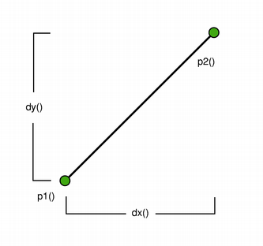
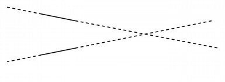
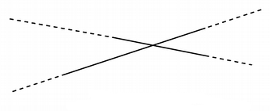

| Home · All Classes · Modules · QSS HELP · QSS 案例 · VER007 HOME |
该QLineF类提供了使用浮点精度二维向量。More...
这个类可以醃制。
该QLineF类提供了使用浮点精度二维向量。
甲QLineF描述了一个二维表面上的有限长度线（或线段） 。 QLineF定义了使用浮点精度坐标的线的起点和终点。使用toLine（ ）函数来检索此行的一个基于整数副本。
|  |  |
可使用检索到的线的开始点和结束点的位置的p1（ ）x1（ ）y1（ ）p2（ ）x2（）和y2（）函数。该dx（）和dy（）函数返回该行的水平和垂直分量。
该生产线的长度可以通过检索的length（）函数，并使用改变了setLength（）函数。同样，angle（）和setAngle（）分别用于检索和改变线的角度。使用isNull（ ）函数来确定QLineF是否代表一个有效的行或空行。
该intersect（ ）函数确定IntersectType对于这条线和一个给定的线，而angle（ ）函数返回线之间的夹角。此外，该unitVector（）函数返回具有相同的起始点作为该行的线，但是仅为1的长度，而normalVector（ ）函数返回一个线垂直于这条线具有相同的起点和长度。
最后，该线可以被转换的给定使用偏移translate（）函数，并且可以使用被遍历的pointAt（）函数。
描述两条线之间的交点。
|  |  |
| QLineF.UnboundedIntersection | QLineF.BoundedIntersection |
| Constant | Value | Description |
|---|---|---|
| QLineF.NoIntersection | 0 | 表明该线没有相交，也就是说，它们是平行的。 |
| QLineF.UnboundedIntersection | 2 | 这两条线相交，但不被它们的长度所定义的范围之内。这将是这种情况，如果线不平行。 |
intersect（）也将返回该值，如果相交点是唯一的线路之一的开始和结束点内。
| Constant | Value | Description |
|---|---|---|
| QLineF.BoundedIntersection | 1 | 两条线彼此相交的每一行的开始和结束点内。 |
See also intersect（ ） 。
构造一个空行。
构造一个线对象，它代表之间的界线p1和p2。
构造一个线对象，它代表之间（线x1，y1）和（x2，y2） 。
构建QLineF从给定的基于整数对象line。
See also toLine（ ） 。
返回该行的以度为单位的角度。
返回值将是值的范围从0.0 ，但不包括360.0 。该角度逆时针从在x轴上的点处测量到的原点（X\u003e 0）的权利。
此功能被引入Qt的4.4 。
See also setAngle（ ） 。
从该行返回的角度（正度）为给定的line，取线的方向考虑在内。如果该行不其范围内相交，这是交叉处的延长线在作为原点的点（见QLineF.UnboundedIntersection） 。
返回的值表示的程度，你需要添加到该行，使其具有相同的角度给出的数字line，逆时针旋转下去。
此功能被引入Qt的4.4 。
See also intersect（ ） 。
返回该行的矢量的水平分量。返回值是，如果正x2（）\u003e =x1（）和负如果x2（）\u003cx1（ ） 。
返回该行的矢量的垂直分量。返回值是，如果正y2（）\u003e =y1（）和负如果y2（）\u003cy1（ ） 。
返回QLineF用给定的length和angle。
行的第一点将在原点。
用于角度的正值逆时针意思而负值意味着顺时针方向。零度是在3点钟的位置。
此功能被引入Qt的4.4 。
返回一个值，指示是否this用给定的线相交line。
实际的交点提取到intersectionPoint（如果指针是有效的） 。如果该线是平行的，交叉点是未定义的。
返回True如果该行没有设置与有效的起始和结束点，否则返回False 。
返回该行的长度。
See also setLength（ ） 。
返回线的垂直于该线具有相同的起点和长度。

See also unitVector（ ） 。
返回该行的起点。
See also setP1（ ）x1（ ）y1（）和p2（ ） 。
返回该行的终点。
See also setP2（ ）x2（ ）y2（）和p1（ ） 。
返回点在由指定的参数位置t。该函数返回该行的起点，如果T = 0 ，它的终点，如果T = 1 。
设置直线的角度为给定的angle（单位：度） 。这将改变线路，使得所述线具有给定角度的第二点的位置。
用于角度的正值逆时针意思而负值意味着顺时针方向。零度是在3点钟的位置。
此功能被引入Qt的4.4 。
See also angle（ ） 。
设置为给定的行的长度length。QLineF会移动的终点 - p2该行给予该行的新长度 - （ ） 。如果给定的length是负的angle（）也被改变。
如果该行是一个空行，其长度将保持零无论指定的长度。
设置此行到开始x1，y1并在结束x2，y2。
此功能被引入Qt的4.4 。
See also setP1（ ）setP2（ ）p1（）和p2（ ） 。
设置此行的起点，以p1。
此功能被引入Qt的4.4 。
设置此行的终点p2。
此功能被引入Qt的4.4 。
设置此行的起点p1并且这条线的终点p2。
此功能被引入Qt的4.4 。
See also setP1（ ）setP2（ ）p1（）和p2（ ） 。
返回此行的一个基于整数副本。
注意，返回的行的起点和终点均四舍五入到最接近的整数。
See also QLineF（ ） 。
由给定的转换这一行offset。
这是一个重载函数。
翻译这行指定的距离dx和dy。
返回此行翻译由给定offset。
此功能被引入Qt的4.4 。
这是一个重载函数。
返回此行翻译指定的距离dx和dy。
此功能被引入Qt的4.4 。
返回在同一点开始作为单位矢量为这条线，即线this用1.0的长度一致。
See also normalVector（ ） 。
返回该行的起始点的X坐标。
See also p1（ ） 。
返回该行的结束点的x坐标。
See also p2（ ） 。
返回该行的起点的y坐标。
See also p1（ ） 。
返回该行的结束点的Y坐标。
See also p2（ ） 。
如果QtGui模块导入此方法仅适用。
如果QtGui模块导入此方法仅适用。
| PyQt 4.10.3 for X11 | Copyright © Riverbank Computing Ltd and Nokia 2012 | Qt 4.8.5 |